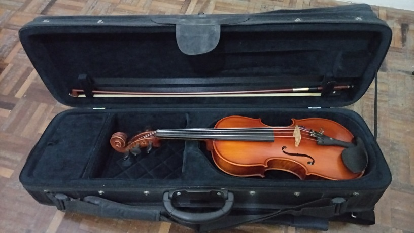
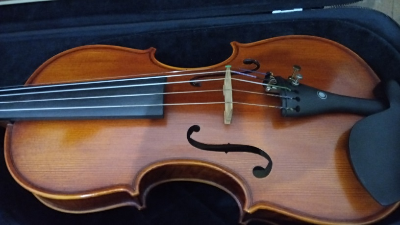
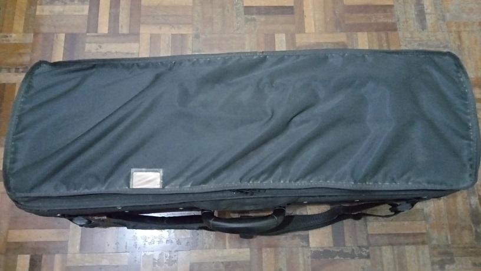

O violino de 5 cordas é o instrumento ideal para quem quer a agilidade e os agudos do violino combinado com o som encorpado da viola. Ele tem as mesmas dimensões de um violino convencional (corpo do instrumento, espelho, braço) porém com uma caixa de cravelhas maior para acomodar uma cravelha extra para a corda dó e estandarte com espaço para 5 cordas.
 O violino de 5 cordas da foto foi feito por luthier chinês em 2004. Apesar de ser chinês ele tem um som bonito e responde bem. Ele vem com arco e estojo de ótima qualidade.
O violino de 5 cordas da foto foi feito por luthier chinês em 2004. Apesar de ser chinês ele tem um som bonito e responde bem. Ele vem com arco e estojo de ótima qualidade.
 O violino de 5 cordas tem um fundo bem bonito com belas cores e belo acabamento. Pelas fotos pode-se ver a qualidade do polimento e do verniz.
O violino de 5 cordas tem um fundo bem bonito com belas cores e belo acabamento. Pelas fotos pode-se ver a qualidade do polimento e do verniz.

De perto é possível ver que o violino de 5 cordas tem um ótimo acabamento. Feito a mão por luthier chinês ele seria uma ótima compra para violinistas de todos os níveis, desde de iniciante até avançado.

O violino de 5 cordas vem acompanhado de um belo estojo, com design arrojado e confortável de carregar. O estojo é bem espaçoso, com espaço suficiente para acessórios como espaleira, breu, surdina, cordas extras, e espaço para amarzenar partituras.
 Carregar um estojo com um violino de 5 cordas é bem mais prático do que carregar 2 estojos com 2 instrumentos diferentes. O estojo tem múltimplas alças para tornar o estojo confortável de carregar para qualquer músico independente da preferência do músico de como carregar o instrumento.
Carregar um estojo com um violino de 5 cordas é bem mais prático do que carregar 2 estojos com 2 instrumentos diferentes. O estojo tem múltimplas alças para tornar o estojo confortável de carregar para qualquer músico independente da preferência do músico de como carregar o instrumento.